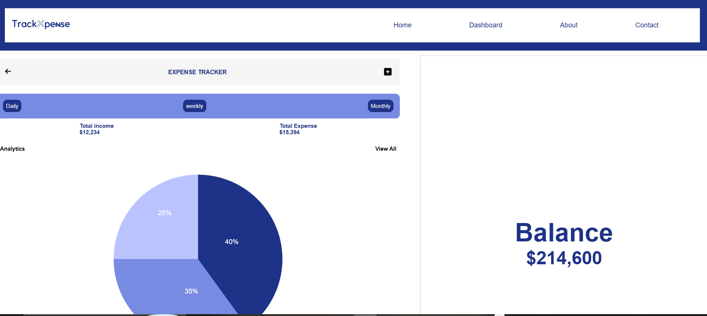
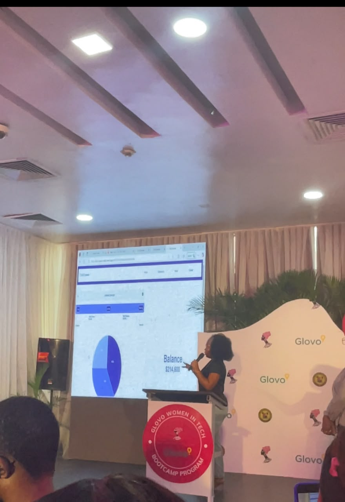
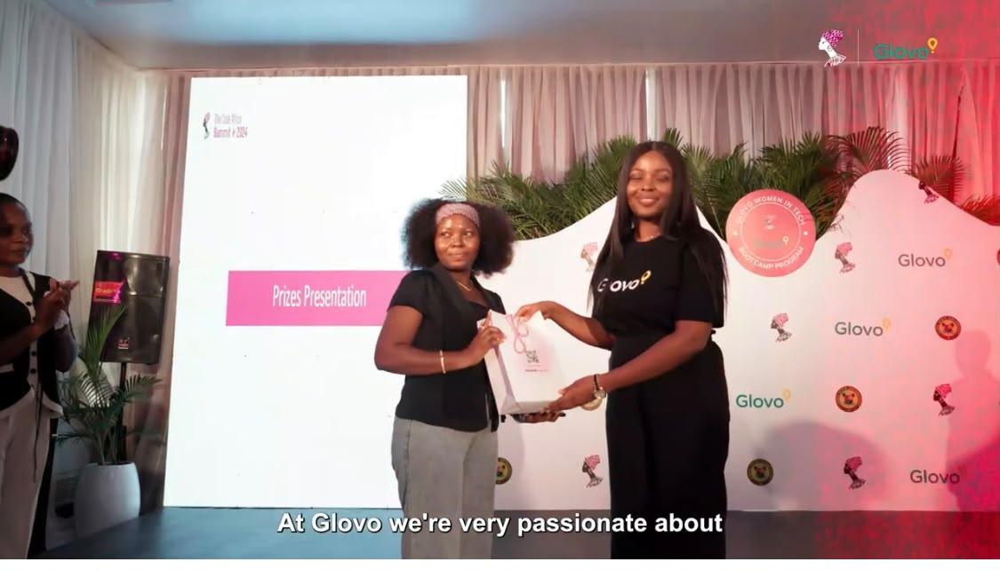
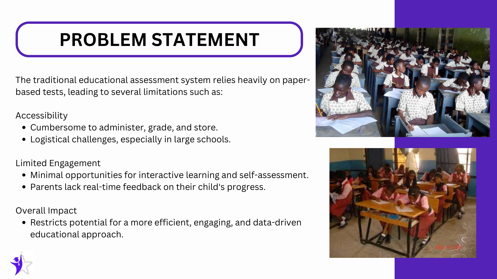
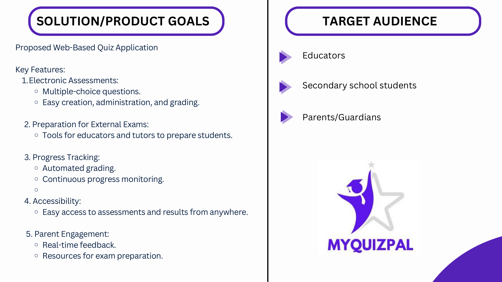
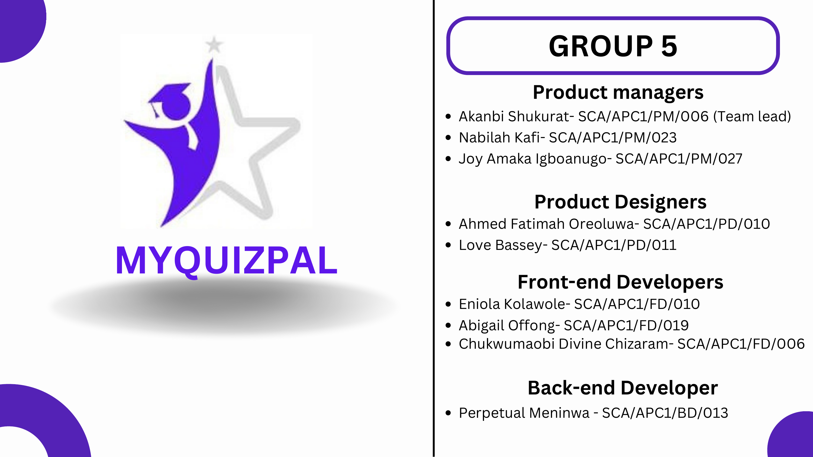
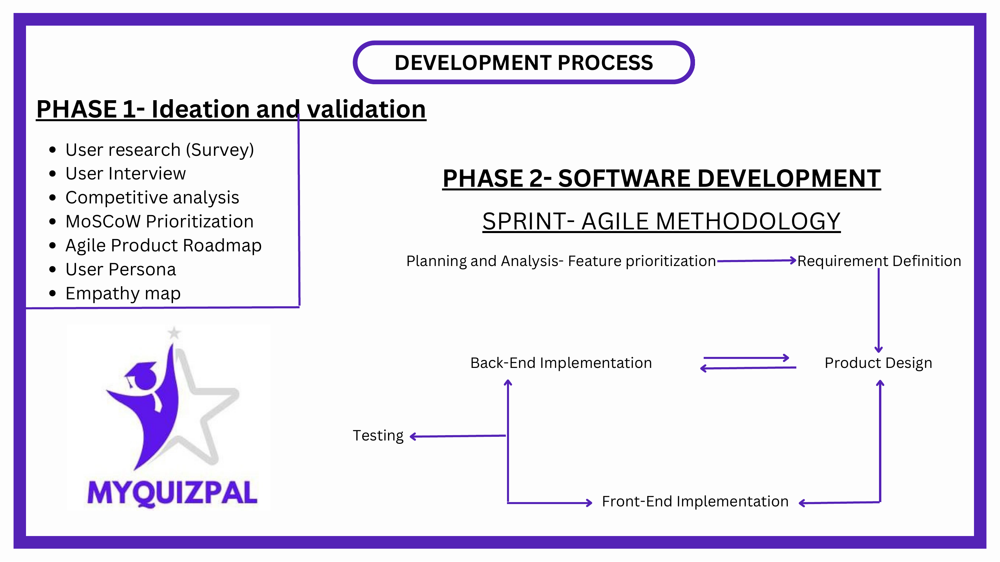
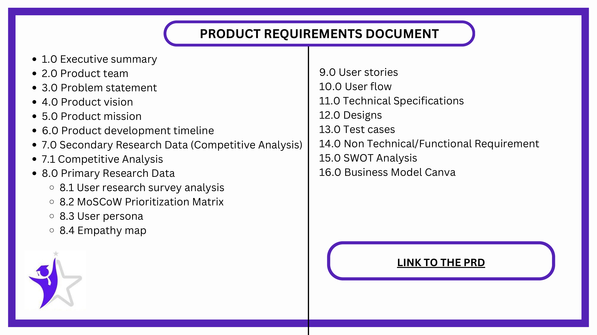
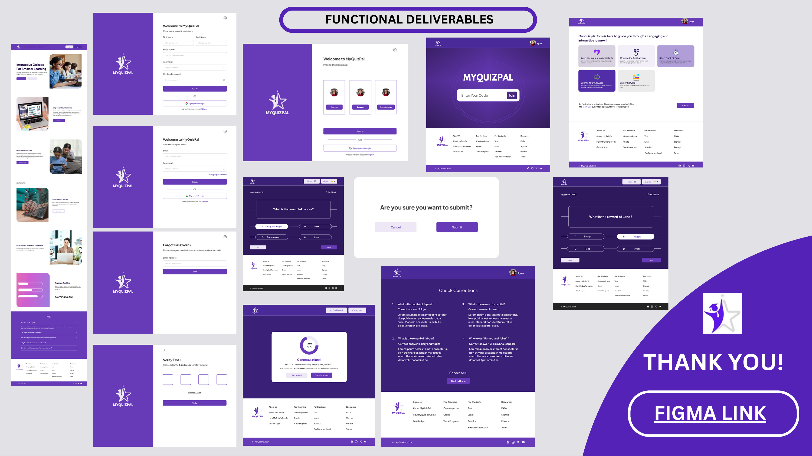
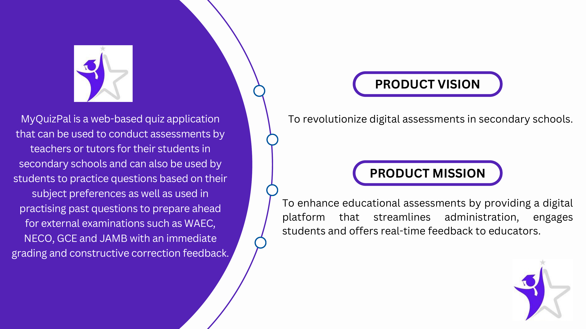

Selected Projects
Three team-led products: two built to a hard deadline and presented on a demo stage, one built from scratch with no process handed to me.
TrackXpense
01. The Challenge
Build a working fintech MVP in a fixed bootcamp timeframe, as one of several competing teams, with only a handful selected to present at the graduation demo day.
02. The Product
An income and expense tracker with daily/weekly/monthly views, category-based analytics, and a live balance summary, designed to make personal finance tracking immediate and visual rather than a spreadsheet chore.

03. My Role
- Team Lead, coordinated the team and delegated work
- Directed product ideation and user flow
- Followed up on implementation and tracked progress against the deadline
- Contributed to frontend implementation and the product experience
- Presented the project at the graduation demo
04. How We Worked
With a hard deadline and a team still finding its rhythm, I scoped the MVP around one core loop, logging and viewing income/expenses, instead of spreading effort across nice-to-have features, and treated mobile responsiveness as core scope rather than a stretch goal.
05. The Outcome
TrackXpense was one of three teams selected to present at the Glovo Women in Tech Bootcamp demo/graduation day, out of multiple competing groups, and placed 2nd overall.
Evidence: Presentation & Demo


My Quiz Pal
01. The Challenge
Traditional paper-based testing is cumbersome to administer, grade, and store, especially at scale, and gives students and parents little real-time visibility into progress or engagement.

02. The Product
My Quiz Pal is a web-based quiz application for secondary school assessment and exam prep: electronic multiple-choice assessments, automated grading, continuous progress tracking, and real-time feedback for educators, students, and parents preparing for WAEC, NECO, GCE and JAMB.

03. My Role
- Team Lead across product managers, designers, and developers
- Product management trainee responsibilities: market research, SWOT and competitor analysis
- Led feature prioritisation and product planning
- Worked directly with developers and designers; followed up on implementation
- Thought through monetisation and revenue opportunities
- Presented the product at the graduation demo

04. The Process
Phase 1 (ideation & validation): user research, user interviews, competitive analysis, MoSCoW prioritisation, roadmap, user persona, empathy map. Phase 2 (software development): Agile sprints moving through requirement definition, product design, front and back-end implementation, and testing.

Documentation
I contributed to a full Product Requirements Document covering the problem statement, vision and mission, research data, user stories, technical specifications, test cases, and business model canvas.

05. The Outcome
My Quiz Pal was built and taken through to a functional set of deliverables: sign-up, onboarding, quiz-taking, real-time scoring, and results screens. Presented at the graduation demo, the team placed 2nd overall.

Evidence: Deck & Deliverables

RecruitRadar
01. The Challenge
A volunteer-run team had an idea for an AI-powered job matching platform, but no dedicated product lead and no established process. They needed someone to step in and own product direction from scratch.
02. The Product
An AI-powered job matching platform designed to connect candidates with roles more precisely than a standard keyword search, matching on skills and fit rather than job titles alone.
03. My Role
- Joined as Volunteer Product Manager with no product lead in place before me
- Led market and competitor research to inform direction
- Applied MoSCoW prioritisation to structure the backlog
- Worked directly with developers and designers day to day
- Wrote the PRD and documented product flow from nothing
04. How I Worked
There was no process to inherit, so I built one: running research myself, translating findings into a prioritised backlog, and setting up the documentation a growing team would need to stay aligned without me repeating myself in every conversation.
05. The Outcome
Research and prioritisation translated into a backlog the team could actually build against. In the interest of transparency: RecruitRadar was a volunteer initiative and was not commercially launched. What it did prove is that I can build product process from a blank page, not just operate inside one someone else built.